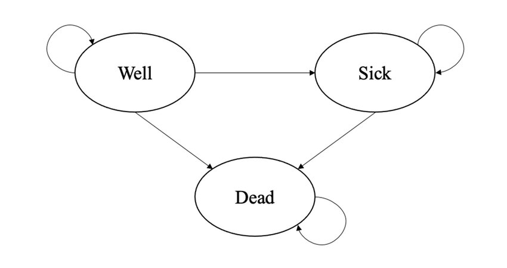

![]()
| Well | Sick | Dead | Total | |
|---|---|---|---|---|
| Well | 0.45 | 0.35 | 0.20 | 1 |
| Sick | 0.05 | 0.60 | 0.35 | 1 |
| Dead | 0.00 | 0.00 | 1.00 | 1 |
Markov Models in Economic Evaluations III
Quarto
R
Academia
Health Economics

Hello dear readers and welcome to a new post. Today, I would like to resume my current series of posts related to decision analytic models in health economics and focus on some extensions of the simple Markov model structure which I introduced in a post a few months ago. I suggest to check out my previous post for a summary introduction and description of what Markov models are and for what they are used.
A simplifying assumption of traditional Markov models is that the transition probabilities regulating the movement between health states remain constant across the model cycles, i.e. over time. In some cases, this simplification of the reality may represent a too strong assumption that, if kept, may lead to misleading cost-effectiveness results. When this occurs, there are different approaches that can be used to overcome this problem and allow at least some transition probabilities to vary over time. Before going into the technical details on how to do this, I would like first to provide a quick description of the different types of time-dependency that can be allowed for transition probabilities and when a specific type might be preferable to use compared to another. For the topics discussed in this post, I took inspiration from Caldwell (2007), which I strongly suggest to consult if you would like to have a more in-depth look into the matter.
Type of time-dependency
The first type of time-dependency allows transition probabilities to vary according to the time in the model, so that the probability of a transition between states changes as the cohort ages. For example, when modelling the evolution of a deadly disease, it may be more reasonable to assume that the probability of moving to a death state increases as the cohort ages. To ensure this is possible, the starting age of a cohort should be stated, so that the age of the cohort at any cycle of the model is also known. We can then implement age-dependent transition probabilities by having a unique probability for each cycle. Commonly, these cycle-dependent transition probabilities are taken from the literature under the form of national life-tables, where death probabilities for different age groups for the target population are usually reported. In general, it makes sense for the transition probabilities to increase as the cohort ages. In addition, since all transition probabilities in a given cycle need to sum up to 1, the probability of remaining in a given state for the next cycle has also to allow for an age-dependent probability.
The second type of time-dependency allows transition probabilities to vary according to time in state, so that the probability changes as the time spent in a state increases. For example, when modelling the evolution of a deadly disease, it may be more reasonable to assume that the probability to move to a death state from a specific disease state increases as the time spent by patients in that disease state also increases. This can be modelled by assuming that the probability of moving between a given state A to another in the model varies according on how long the patient had been in the given state A, given that all patients start in the model in state A at a given time and that once they leave it they cannot return in it. This allows to keep track of how long a patient has been in state A and makes the transition probability dependent on time in a state equivalent to making it dependent on the age of the cohort.
When external sources providing information on age-dependent transition probabilities are not available, the relationship between a transition probability and time can be estimated using patient-level data, i.e. in the form of a longitudinal study recording the time to an event for each patient. Estimation can then be performed by means of survival analysis methods, which allow to handle (noninformative) censoring which frequently occurs in longitudinal studies, i.e. when observations stop being recorded before a patient has had the chance of experiencing the event of interest. Usually, parametric survival models are employed in order to obtain an estimate of the relation between the risk of experiencing an event and time, represented by the functional form of the hazard function. In particular, of key importance is the survivor function
\[ S(t)=P(T>t)=1-F(t), \]
denoting the probability of surviving (i.e. not experiencing the event) for a period of time greater than \(t\), with \(F(t)=P(T\leq t)\) being the cumulative density function. We can also express the survivor function in terms of the cumulative hazard function such that
\[ S(t)=\text{exp}\{-H(t)\}, \]
where, $H(t) $denotes the cumulative instantaneous chance of experiencing the event (i.e. hazard rate) at time \(t\), conditional on having survived to time \(t\). Using this relationship, it is possible to derive transition probabilities for Markov models. For example, let’s consider a single type of Markov model with only two states, i.e. alive and death, so that only one transition probability needs to be estimated. Define the length of the Markov cycle as \(u\) and let the instantaneous hazard of death at time \(t\) be \(h(t)\). We now need to estimate the discrete transition probability between the moments \((t-u)\) and \(t\), say \(p(t_u)\), where \(t_u\) indicates that \(t\) is now measured as integer multiples of the cycle length of the model \(u\).
The baseline transition probability of the event of interest can be defined as
\[ p(t_u)=1-\frac{S(t)}{S(t-u)}, \]
which can be re-written in terms of the cumulative hazard as
\[ p(t_u)=1-\frac{\text{exp}\{-H(t)\}}{\text{exp}\{-H(t-u)\}}=1-\text{exp}\{H(t-u)-H(t)\} \]
A simple example
As a demonstrative example, let’s consider the transition matrix shown in Table 1, which displays the assumed transition probabilities for three health states (Well, Sick and Dead) from baseline (rows) to 1 month follow-up (columns), for an hypothetical experimental treatment.
Let’s also assume that patients were randomised to one of two treatments, namely Experimental vs Control, and they were considered to be in either a Well or Sick state. From Table 1, we can see that the proportion of patients who started the hypothetical trial at baseline in a Well state and then remained in the same state after treatment was \(45\%\), very few patients (\(5\%\)) who started the trial in a Sick state improved into a Well state at follow up, and \(60\%\) of patients who were in the Sick state did not change states after starting treatment.
Normally, if we kept the assumption of constant transition probabilities within the model, I would be able to compute what the transition matrix will look like after, say, \(1\) month by simply multiplying the initial probabilities (e.g. equal to the first row of Table 1) by the \(3\times3\) transition matrix in Table 1. In general, one can compute the proportion of patients for the \(n+1\)-th step in any of these three health states by simply multiplying the updated transition matrix at step \(n\) by the given transition matrix. However, if we relax the assumption of constant transition probabilities over time, we need to create an entirely new transition matrix and specify how its entries changes over time. For this example, to ease exposition, I will focus on the first type of time-dependency where the relation between probabilities and time is expressed in terms of the age of the cohort, i.e. the number of cycles \(T\) passed in the model. This can be achieved in R by creating an array of dimensions \(3\times3\times T\), representing the entries of the \(3\times3\) transition matrix at each of the \(T\) cycles of the model.
#set model parameters
n_t <- 12
n_s <- 3
n_c <- 1000
state_names <- rownames(tabex)
#create empty transition matrix
tm <- array(NA,dim=c(n_s,n_s,n_t),
dimnames = list(from=state_names,
to = state_names,
cycle = 1:n_t))
#fill in matrix taking into account changes due to cycles
tm[3,1,] <- 0 #no transition from dead to well
tm[3,2,] <- 0 #no transition from dead to sick
tm[3,3,] <- 1 #dead is absorbing state
#set baseline probabilities
tm_base <- matrix(c(0.45,0.05,0,0.35,0.6,0,0.2,0.35,1),3,3)
tm[,,1] <- tm_base
#assume that prob of moving from well to sick is increasing linearly over cycles
tm[1,2,] <- tm[1,2,1] + (tm[1,2,1]*seq(1:n_t))/100
#assume that prob of moving from well to death is increasing linearly over cycles but less
tm[1,3,] <- tm[1,3,1] + (tm[1,3,1]*sqrt(seq(1:n_t)))/100
#assume that prob of moving from sick to death is increasing linearly over cycles but more
tm[2,3,] <- tm[2,3,1] + (tm[2,3,1]*(seq(1:n_t))^2)/100
#assume that prob of moving from sick to well is constant
tm[2,1,] <- rep(tm[2,1,1],n_t)
#fill in all other probabilities
tm[1,1,] <- 1 - (tm[1,2,]+tm[1,3,])
tm[2,2,] <- 1 - (tm[2,1,]+tm[2,3,])
tm, , cycle = 1
to
from Well Sick Dead
Well 0.4445 0.3535 0.2020
Sick 0.0500 0.5965 0.3535
Dead 0.0000 0.0000 1.0000
, , cycle = 2
to
from Well Sick Dead
Well 0.4401716 0.357 0.2028284
Sick 0.0500000 0.586 0.3640000
Dead 0.0000000 0.000 1.0000000
, , cycle = 3
to
from Well Sick Dead
Well 0.4360359 0.3605 0.2034641
Sick 0.0500000 0.5685 0.3815000
Dead 0.0000000 0.0000 1.0000000
, , cycle = 4
to
from Well Sick Dead
Well 0.432 0.364 0.204
Sick 0.050 0.544 0.406
Dead 0.000 0.000 1.000
, , cycle = 5
to
from Well Sick Dead
Well 0.4280279 0.3675 0.2044721
Sick 0.0500000 0.5125 0.4375000
Dead 0.0000000 0.0000 1.0000000
, , cycle = 6
to
from Well Sick Dead
Well 0.424101 0.371 0.204899
Sick 0.050000 0.474 0.476000
Dead 0.000000 0.000 1.000000
, , cycle = 7
to
from Well Sick Dead
Well 0.4202085 0.3745 0.2052915
Sick 0.0500000 0.4285 0.5215000
Dead 0.0000000 0.0000 1.0000000
, , cycle = 8
to
from Well Sick Dead
Well 0.4163431 0.378 0.2056569
Sick 0.0500000 0.376 0.5740000
Dead 0.0000000 0.000 1.0000000
, , cycle = 9
to
from Well Sick Dead
Well 0.4125 0.3815 0.2060
Sick 0.0500 0.3165 0.6335
Dead 0.0000 0.0000 1.0000
, , cycle = 10
to
from Well Sick Dead
Well 0.4086754 0.385 0.2063246
Sick 0.0500000 0.250 0.7000000
Dead 0.0000000 0.000 1.0000000
, , cycle = 11
to
from Well Sick Dead
Well 0.4048668 0.3885 0.2066332
Sick 0.0500000 0.1765 0.7735000
Dead 0.0000000 0.0000 1.0000000
, , cycle = 12
to
from Well Sick Dead
Well 0.4010718 0.392 0.2069282
Sick 0.0500000 0.096 0.8540000
Dead 0.0000000 0.000 1.0000000To continue our example, let’s now consider a more realistic scenario where the transition matrix and initial probabilities are provided for both an experimental group and a control group form an hypothetical trial assessing the cost-effectiveness of the two treatments. The baseline \(3\times3\) transition matrix associated with the two Control group is shown in Table 2.
| Well | Sick | Dead | Total | |
|---|---|---|---|---|
| Well | 0.25 | 0.25 | 0.50 | 1 |
| Sick | 0.10 | 0.45 | 0.45 | 1 |
| Dead | 0.00 | 0.00 | 1.00 | 1 |
Next, we define the full transition matrix over time for the Control group as we did for the Experimental group before.
#create empty transition matrix
tm_control <- array(NA,dim=c(n_s,n_s,n_t),
dimnames = list(from=state_names,
to = state_names,
cycle = 1:n_t))
#fill in matrix taking into account changes due to cycles
tm_control[3,1,] <- 0 #no transition from dead to well
tm_control[3,2,] <- 0 #no transition from dead to sick
tm_control[3,3,] <- 1 #dead is absorbing state
#set baseline probabilities
tm_base_control <- matrix(c(0.25,0.10,0,0.25,0.45,0,0.50,0.45,1),3,3)
tm_control[,,1] <- tm_base
#assume that prob of moving from well to sick is increasing linearly over cycles
tm_control[1,2,] <- tm_control[1,2,1] + (tm_control[1,2,1]*seq(1:n_t))/100
#assume that prob of moving from well to death is increasing linearly over cycles but less
tm_control[1,3,] <- tm_control[1,3,1] + (tm_control[1,3,1]*sqrt(seq(1:n_t)))/100
#assume that prob of moving from sick to death is increasing linearly over cycles but more
tm_control[2,3,] <- tm_control[2,3,1] + (tm_control[2,3,1]*(seq(1:n_t))^2)/100
#assume that prob of moving from sick to well is constant
tm_control[2,1,] <- rep(tm_control[2,1,1],n_t)
#fill in all other probabilities
tm_control[1,1,] <- 1 - (tm_control[1,2,]+tm_control[1,3,])
tm_control[2,2,] <- 1 - (tm_control[2,1,]+tm_control[2,3,])Once the transition probabilities over the desired number of cycles are estimated/filled in, further data manipulation can be carried out to estimate the expected costs and effects, which can be included in an additional vector and then multiplied with the elements of the matrices after each cycle to generate the expected total costs and effects. As an example, let’s assume that patients were treated for \(3\) months but followed up for \(12\) months during the trial and that costs were collected from patients files and measured in euros, while effects were collected via self-reported questionnaires (e.g. EQ-5D) and measured via utilities. We need to associate to each health state and treatment in the model a corresponding value for each of the outcomes that we want to measure, i.e. costs and utilities. Thus, we may assume that (monthly) utilities for each health state and treatment are \(u^{well}=(0.78,0.70)\), \(u^{sick}=(0.40,0.35)\), and \(u^{dead}=(0,0)\). We may also assume that (monthly) costs vary between treatment groups and health states, i.e. \(c_{exp}=(954,1516,0)\) and \(c^{ctr}=(435,780,0)\). Next, we need to determine the number of cycles of the model. In this case, we will use \(12\) cycles given that we focus over a \(1\) year follow-up, with each cycle being \(1\) month long. Hence, the expected costs and QALYs for each month will be generated and then added up.
The proportion of patients in each of the health states at the start of the model needs to be determined, typically an arbitrary large number, e.g. \(1000\), since the idea is to estimate the cumulative costs and effects over the \(1000\) patients for each group. We can now proceed to calculate the transition matrices and total costs and QALYs associated with both treatment groups over \(12\) months via our Markov Model.
#set up initial values for the model
#utilities and costs by health state and treatment
u_well <- c(0.78,0.70)
u_sick <- c(0.4,0.35)
u_dead <- c(0,0)
c_exp <- c(954,1516,0)
c_ctr <- c(435,780,0)
#create function to run the model
mm_td_sim <- function(tm_exp,tm_ctr,u_well,u_sick,u_dead,c_exp,c_ctr,n_cycle,n_pat,n_state){
res_list <- res_list_exp <- res_list_ctr <- list()
#assign state membership
state_membership_exp <- array(NA_real_, dim=c(n_cycle,n_state),
dimnames = list(cycle=1:n_cycle,
state = c("Well","Sick","Dead")))
state_membership_ctr <- array(NA_real_, dim=c(n_cycle,n_state),
dimnames = list(cycle=1:n_cycle,
state = c("Well","Sick","Dead")))
#set people at start of cohort by health state
state_membership_exp[1,] <- c(n_pat,0,0)
state_membership_ctr[1,] <- c(n_pat,0,0)
#compute state membership based on tp of the matrix specific to treatment
for(i in 2:n_cycle){
state_membership_exp[i,] <- state_membership_exp[i-1,] %*% tm_exp[,,i-1]
state_membership_ctr[i,] <- state_membership_ctr[i-1,] %*% tm_ctr[,,i-1]
}
#compute state membership for only those alive
state_membership_exp_alive <- rowSums(state_membership_exp[,1:2])
state_membership_ctr_alive <- rowSums(state_membership_ctr[,1:2])
#assign u and c values
payoffs_exp <- array(NA_real_, dim=c(n_state,2,n_cycle),
dimnames = list(state=c("Well","Sick","Dead"),
payoff=c("Cost","QALY"),
cycle=1:n_cycle))
payoffs_ctr <- array(NA_real_, dim=c(n_state,2,n_cycle),
dimnames = list(state=c("Well","Sick","Dead"),
payoff=c("Cost","QALY"),
cycle=1:n_cycle))
payoffs_exp[,,1:n_cycle] <- c(c_exp[1],c_exp[2],c_exp[3],u_well[1],u_sick[1],u_dead[1])
payoffs_ctr[,,1:n_cycle] <- c(c_ctr[1],c_ctr[2],c_ctr[3],u_well[2],u_sick[2],u_dead[2])
#apply u and c value based on state membership at each cycle
payoff_trace_exp <- array(NA_real_,dim=c(n_cycle,2),
dimnames = list(cycle=1:n_cycle,
payoff=c("Cost","QALY")))
payoff_trace_ctr <- array(NA_real_,dim=c(n_cycle,2),
dimnames = list(cycle=1:n_cycle,
payoff=c("Cost","QALY")))
for(i in 1:n_cycle){
payoff_trace_exp[i,] <- state_membership_exp[i,] %*% payoffs_exp[,,i]
payoff_trace_ctr[i,] <- state_membership_ctr[i,] %*% payoffs_ctr[,,i]
}
#save output
res_list_exp[[1]] <- tm_exp
res_list_exp[[2]] <- state_membership_exp
res_list_exp[[3]] <- state_membership_exp_alive
res_list_exp[[4]] <- payoff_trace_exp[,1]
res_list_exp[[5]] <- payoff_trace_exp[,2]
res_list_ctr[[1]] <- tm_ctr
res_list_ctr[[2]] <- state_membership_ctr
res_list_ctr[[3]] <- state_membership_ctr_alive
res_list_ctr[[4]] <- payoff_trace_ctr[,1]
res_list_ctr[[5]] <- payoff_trace_ctr[,2]
names(res_list_exp)<-c("TM","npatients","nalive","costs","QALYs")
names(res_list_ctr)<-c("TM","npatients","nalive","costs","QALYs")
res_list[[1]] <- res_list_exp
res_list[[2]] <- res_list_ctr
names(res_list)<-c("Experimental","Control")
return(res_list)
}
#run the function and get the output
mm_td_res <- mm_td_sim(tm_exp=tm,tm_ctr=tm_control,
u_well=u_well,u_sick=u_sick,u_dead=u_dead,
c_exp=c_exp,c_ctr=c_ctr,n_cycle=n_t,n_pat=n_c,n_state=n_s)For example, we can extract information regarding the number of patients associated with each health state at each cycle of the model for both intervention groups:
#experimental
mm_td_res$Experimental$npatients state
cycle Well Sick Dead
1 1000.000000 0.000000 0.0000
2 444.500000 353.500000 202.0000
3 213.331264 365.837500 420.8312
4 111.311964 284.884539 603.8035
5 62.330996 195.494745 742.1743
6 36.454140 123.097697 840.4482
7 21.615123 71.872795 906.5121
8 12.676498 38.892356 948.4311
9 7.222391 19.415242 973.3624
10 3.949998 8.900266 987.1497
11 2.059281 3.745816 994.1949
12 1.021025 1.461167 997.5178#control
mm_td_res$Control$npatients state
cycle Well Sick Dead
1 1000.000000 0.000000 0.0000
2 444.500000 353.500000 202.0000
3 213.331264 365.837500 420.8312
4 111.311964 284.884539 603.8035
5 62.330996 195.494745 742.1743
6 36.454140 123.097697 840.4482
7 21.615123 71.872795 906.5121
8 12.676498 38.892356 948.4311
9 7.222391 19.415242 973.3624
10 3.949998 8.900266 987.1497
11 2.059281 3.745816 994.1949
12 1.021025 1.461167 997.5178or the costs and QALYs accrued at each cycle across the alive patients
#experimental
mm_td_res$Experimental$costs 1 2 3 4 5 6 7
954000.000 959959.000 758127.676 538076.576 355833.802 221393.359 129579.984
8 9 10 11 12
71054.191 36323.668 17261.102 7643.211 3189.187 mm_td_res$Experimental$QALYs 1 2 3 4 5 6 7
780.000000 488.110000 312.733386 200.777148 126.816074 77.673308 45.608914
8 9 10 11 12
25.444611 13.399562 6.641105 3.104565 1.380866 #control
mm_td_res$Control$costs 1 2 3 4 5 6 7
435000.000 469087.500 378152.350 270630.645 179599.884 111873.755 65463.358
8 9 10 11 12
35850.314 18285.629 8660.457 3817.523 1583.856 mm_td_res$Control$QALYs 1 2 3 4 5 6 7
700.000000 434.875000 277.375010 177.627964 112.054858 68.602092 40.286064
8 9 10 11 12
22.485873 11.851008 5.880092 2.752532 1.226126 from which an estimate of the mean costs and QALYs (and the group differences) over the \(12\) months period (without discounting) can be obtained by taking the sum across these accrued expected values at each cycle
#experimental
mu_c_exp <- sum(mm_td_res$Experimental$costs)
mu_e_exp <- sum(mm_td_res$Experimental$QALYs)
#control
mu_c_ctr <- sum(mm_td_res$Control$costs)
mu_e_ctr <- sum(mm_td_res$Control$QALYs)
mu_c_diff <- mu_c_exp-mu_c_ctr
mu_e_diff <- mu_e_exp-mu_e_ctrand from this an estimate of the ICER can be obtained:
\[ \text{ICER} = \frac{4.0524418\times 10^{6} - 1.9780053\times 10^{6}}{2081.6895399-1855.0166193} =\frac{2.0744365\times 10^{6}}{226.6729206} = 9151.67 \]
and that’s it for today. I hope you found this interesting as there is lots more to come in the future!
References
Caldwell, Deborah. 2007. “Decision Modelling for Health Economic Evaluation. A Briggs, m Sculpher, k Claxton.” Oxford University Press.